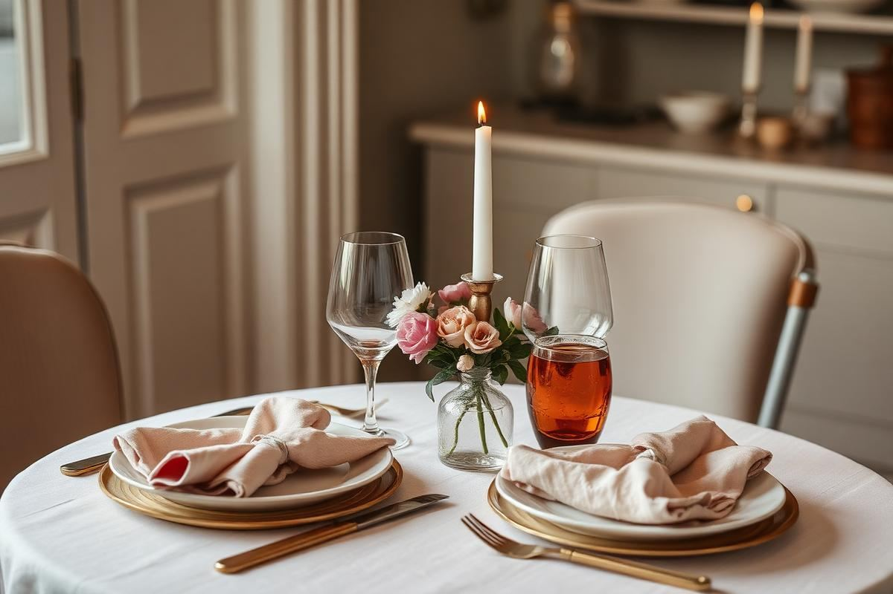

Valentine's Day Decor Ideas That Are Not Cheesy

Valentine's decorating has a reputation problem, and it is largely earned. The default kit — foil hearts, hot pink, cupid motifs, a plastic banner — is designed to be seen for one evening and thrown away, which is both wasteful and, honestly, a bit joyless. The alternative is not to skip the occasion. It is to treat it the way you would treat any small dinner at home: a restrained palette, real flowers, proper candlelight, and a table that looks considered.
Everything below can be assembled from things most homes already own plus one flower purchase, and none of it looks out of place if you leave it up for the rest of the month.
The problem with pink and red
It is not the colours themselves. Red and pink are wonderful in a room. The problem is saturation and finish: the specific hot pink and postbox red of seasonal aisle decorations are high-chroma and usually glossy or metallic, which reads as plastic under warm indoor light. Shift the same hues down in saturation and up in warmth and they become sophisticated instantly.
Think dusty rose instead of bubblegum, oxblood or terracotta instead of scarlet, and clay or blush instead of neon pink. Those tones sit happily alongside the oak, linen, and cream that most homes already run on.
Building a better palette
Pick three colours and hold the line. My reliable combination is a warm neutral base, one muted rose or clay, and one deep accent — burgundy, plum, or a rich brown. Keep 70 per cent of the visible surfaces in the neutral, 20 per cent in the rose, and 10 per cent in the deep accent, which is enough to register as intentional without turning the room into a display.
- Base: oatmeal linen, cream ceramics, natural oak, unbleached beeswax.
- Mid: dusty rose napkins, clay-toned candles, blush glassware.
- Accent: burgundy tulips, plum ribbon, a deep red wine glass stem.
- Metal: brass or unlacquered copper. Skip silver and anything foil.
Flowers that are not a dozen roses
A dozen red roses in a tall vase is the most expensive and least interesting option available on the fourteenth of February. Buy something seasonal and less demanded instead, and your money goes considerably further. Ranunculus, anemones, hellebores, tulips, and early narcissi are all in season in mid-February and all read as far more thoughtful than the standard bouquet.
Arrange low rather than tall for a dining table — under 25 cm so people can see across it — and use two or three small vessels down the centre rather than one large arrangement. Add a few stems of eucalyptus or bare cherry branch for structure. If you want roses, buy garden roses in a single muted colour and let them open fully rather than using them in tight bud.

Getting the candlelight right
Candlelight is the whole trick, and there are rules that make the difference between romantic and dim. Use an odd number of candles, keep the flames either below eye level or well above it so nobody is staring into a flame across the table, and turn every overhead light off. Supplement with two lamps in the corners of the room on the lowest setting so the space still has depth.
- Unscented candles on the table — scent competes with the food.
- Beeswax or a good paraffin blend; cheap tapers bend and smoke.
- Group in threes or fives, at two different heights.
- Light them fifteen minutes before guests arrive so the wax has pooled.
The table, step by step
Start with a linen runner or bare wood — a full tablecloth makes a two-person dinner feel formal in the wrong way. Add the candles, then the flowers, then the place settings, then one small personal element at each seat: a hand-written menu card, a sprig tucked into the napkin, or a single wrapped chocolate on the side plate. That last detail is what people remember, and it costs almost nothing.
Fold napkins simply, flat and rectangular under the fork rather than in any shape. Glassware should be clean and, if possible, matched. If you own mismatched glasses, choose a set of the same colour family rather than trying to make different styles work together.
Beyond the dining table
A few small touches elsewhere carry the evening better than piling everything onto the table. Put a candle and a small posy in the bathroom. Swap the sofa cushions to your rose and burgundy set. Put a folded throw over the arm of the sofa for after dinner, and clear the coffee table down to a tray, a candle, and a glass. If you have a hallway, one stem in a bud vase by the door sets the tone before anyone reaches the dining room.
Music and temperature belong in the same category. A room three degrees warmer than usual with a quiet playlist and no overhead light does more for atmosphere than a dozen decorations.
For friends and family, not just couples
None of this depends on there being two people at the table. For a group of friends, run the same palette but scale up to a long low line of candles and small vases, and set a shared platter in the centre instead of plated courses. For children, keep the grown-up palette and let the craft element be theirs: paper garlands cut from pink and clay-coloured card look genuinely charming when the colours are muted rather than fluorescent.
A solo February evening deserves the same effort, incidentally. Candles, good flowers, and a properly laid place setting for one is not an odd thing to do; it is one of the better arguments for keeping nice things in use rather than saving them.
Making it last past the fourteenth
Because the palette is muted rather than novelty, everything on this list can stay in place through to March. The flowers will hold a week if you recut the stems at an angle every two days and change the water. The candles get used on ordinary evenings. The cushions stay until spring. That is the real argument for this approach: nothing on the table exists only for one night, so nothing has to be thrown away on the fifteenth.
Buy one good thing each year instead of a bag of disposable ones — a pair of brass candlesticks, a linen runner, three small ceramic bud vases — and in five years you will have a February kit that costs nothing to reuse and looks better than anything in the seasonal aisle.
Key takeaways
- Use muted rose, clay, and burgundy instead of hot pink and scarlet.
- Buy seasonal ranunculus and anemones rather than a dozen red roses.
- Keep centrepieces under 25 cm and use unscented candles in odd numbers.
- Turn overheads off and light the room with candles plus two low lamps.
- Choose reusable pieces so the setting stays up through February.
Frequently asked questions
How do I decorate for Valentine's Day without it looking tacky?
Drop the saturation. Use dusty rose, clay, and burgundy instead of hot pink and scarlet, avoid foil and glossy finishes, and rely on candlelight and real flowers rather than novelty objects.
What flowers are best for Valentine's Day besides roses?
Ranunculus, anemones, hellebores, tulips, and early narcissi are all in season in mid-February, cost less than roses that week, and look more considered.
How tall should a dining table centrepiece be?
Under 25 cm so guests can see over it, or above 60 cm if you are using a tall single stem arrangement. Anything in between blocks sightlines.
How many candles should be on a dinner table?
An odd number, grouped in threes or fives at two different heights, and always unscented so they do not compete with the food.
Can Valentine's decor work for friends or family?
Yes. Keep the same muted palette, run a longer line of candles and small vases, and serve from shared platters instead of plated courses.

Sophia Bennett is a certified interior stylist and the senior editor at Styleire. She has spent more than eight years helping homeowners and renters create warm, functional interiors, with hands-on experience across small city apartments and family homes. Her work has been informed by close collaboration with independent designers, craftspeople, and product testers.
View full profile →Related reading

Dining Room Lighting Guide: Pendants, Height, and Bulbs
A great dining room comes down to one fixture, hung correctly, with the right bulb.

How to Style a Dining Table for Every Day and for Guests
A dining table needs two looks — one that survives homework and breakfast, and one that takes ten minutes before guests arrive. Here is how to build both.

New Year Home Reset: A Room-by-Room Decor Refresh
January rooms feel flat once the decorations come down. This is the room-by-room reset I run every year to make a house feel calm, warm, and organised again.